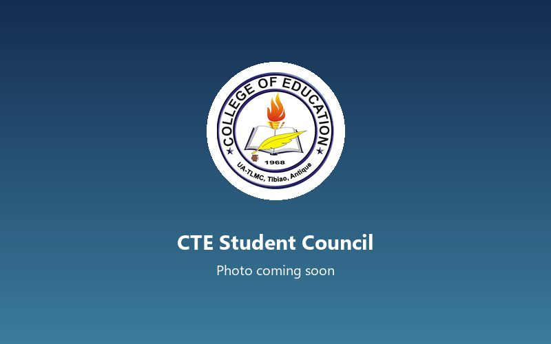
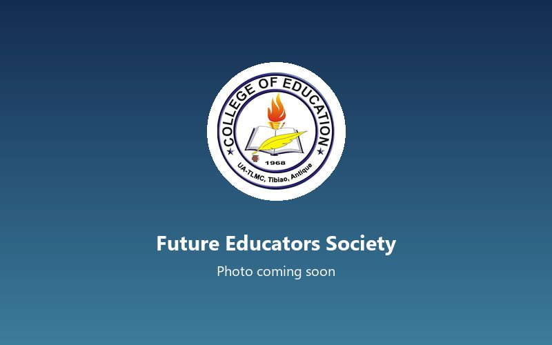
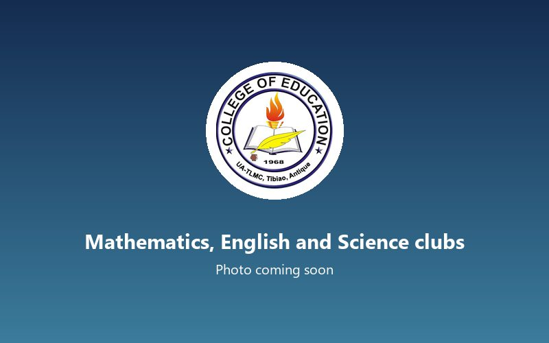

Reading Comprehension Levels of Grade 7 Learners in Selected Public Schools in Northern Antique
Q1 2026Completed
The College of Teacher Education prepares elementary and secondary school teachers for the schools of Antique and the rest of Western Visayas, with practice teaching in partner public schools and a strong grounding in Kinaray-a and mother tongue-based instruction.
Aldrex A. Barrientos, PhDAssociate Dean, College of Teacher Education
Associate Dean, College of Teacher Education
Program Head, Bachelor of Elementary Education
Program Head, Bachelor of Secondary Education, Major in Mathematics
Program Head, Bachelor of Secondary Education, Major in English
Program Head, Bachelor of Secondary Education, Major in Science
Area Head, Filipino
Area Head, Social Science
Area Head, Physical Education
Choose a program to see its accreditation, objectives, curriculum and faculty.
[Program educational objectives for this program go here.]
Program Head, BEEd
Associate Professor II
Assistant Professor III
Assistant Professor I
Instructor III
[Program educational objectives for this program go here.]
Program Head, BSEd Math
Associate Professor II
Assistant Professor III
Assistant Professor I
Instructor III
[Program educational objectives for this program go here.]
Program Head, BSEd English
Associate Professor II
Assistant Professor III
Assistant Professor I
Instructor III
[Program educational objectives for this program go here.]
Program Head, BSEd Science
Associate Professor II
Assistant Professor III
Assistant Professor I
Instructor III
Courses based on the CHED policies, standards and guidelines for each program. The official prospectus with year levels, semesters and units is available from the college.
Enrollment per program for the last three academic years.
| Program | A.Y. 2023–2024 | A.Y. 2024–2025 | A.Y. 2025–2026 | Change from last year |
|---|---|---|---|---|
| Bachelor of Elementary Education | 312 | 298 | 335 | +37 (+12.4%) |
| Bachelor of Secondary Education, Major in Mathematics | 168 | 181 | 176 | -5 (-2.8%) |
| Bachelor of Secondary Education, Major in English | 154 | 162 | 171 | +9 (+5.6%) |
| Bachelor of Secondary Education, Major in Science | 141 | 150 | 163 | +13 (+8.7%) |
| Total | 775 | 791 | 845 | +54 (+6.8%) |

Represents all CTE students and leads college-wide activities

Peer tutoring, teaching demonstrations and education fora

Subject-area contests, quiz bees and learning sessions
CTE quadrangle, 8:00 AM, 2026
CTE audio-visual room, 1:00 PM, 2026
Campus gymnasium, 9:00 AM, 2026